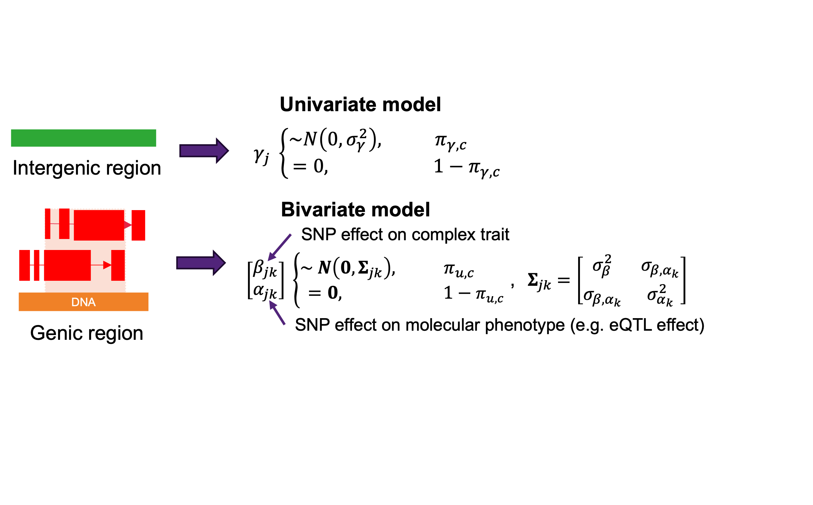

Mediated heritability estimation#
Schematic overview of SBayesC(R)O-AIAO

Summary-level AIAO model#
Options#
- --sbayes CO#
Bayesian model used for parameter estimation.
- --mcmc-type eieo#
Algorithm used for parameter estimation.
- --ldm-eigen#
GWAS LD low-rank matrix, see GCTB for detail.
- --ldm-eigen-gene#
xQTL LD low-rank matrix.
- --beqtl-summary eqtlSummaryFile#
A common used format for molecular summary statistics, see .besd for details.
- --add-gene-n gsamFile#
Store the sample sizes for each gene or each gene-SNP pair, see .gsam for details.
- --beqtl-summary-gz eqtlSummaryGZFile#
Another more easy-used format for molecular summary statistics, see .query.gz for details.
- --gwas-summary gwasFile#
COJO format GWAS summary statistics
Command#
BayesOmics64 --sbayes CO \ --mcmc-type eieo \ --ldm-eigen ldmEigenFolder \ --ldm-eigen-gene ldmEigenGeneFile \ --beqtl-summary-gz eqtlSummaryGZFile \ # or use --beqtl-summary eqtlSummaryFile --gwas-summary gwasFile \ --out outFile
Examples#
### downlaod dataset
git clone git@github.com:ShouyeLiu/BayesOmics.git
## find data in the Cau folder: BayesOmics/samples/pseudo/data/Cau/summary/
sumPath="" # cauFolder path
summaryFile="pseudo-1kg-chr22-cau-h2snp0.4-h2med-0.4-h2cis-0.6-model"
outFile="res-"${summaryFile} ## outFilePath
### downlaod binary tool
cd MainPath ## your main Path
wget https://github.com/ShouyeLiu/BayesOmics/releases/latest/download/BayesOmics64-static
chmod 751 BayesOmics64-static
BayesOmics64-static --sbayes CO \
--ldm-eigen ${sumPath}/${summaryFile} \
--gwas-summary ${sumPath}/${summaryFile}.ma \
--ldm-eigen-gene ${sumPath}/${summaryFile} \
--beqtl-summary ${sumPath}/${summaryFile} \
--hsq 0.1 \
--hsq-cis 0.1 \
--mcmc-type aiao \
--chain-length 5000 \
--burn-in 1800 \
--seed 10 \
--out-freq 500 \
--out outFile
Citations#
[1] Shouye Liu, Zhili Zheng, Julia Sidorenko, Jian Yang, Peter Visscher and Jian Zeng. A novel Bayesian integrative multivariate mixed model increases power for mediated heritability estimation. In preparation. Preprint available on bioRxiv doi: